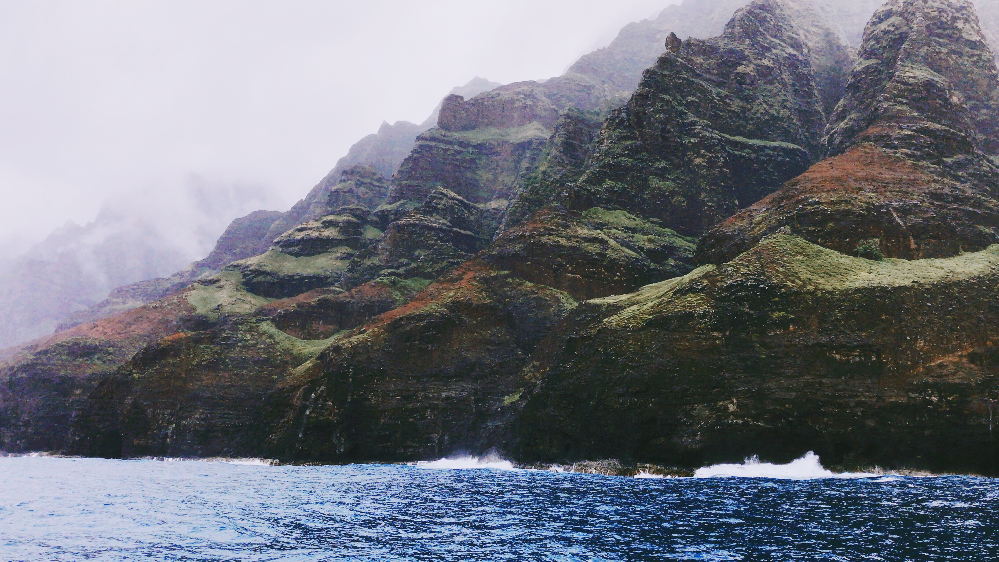

Kauai aka "The Garden Island"
Trip Highlights
- # of Days: 7
- When we traveled: April
- Where we stayed: Courtyard (now Sheraton) Kauai at Coconut Beach (3 nights in Kapaa) and Koloa Landing Resort (3 nights in Koloa) - both are great locations
- Mode of transport: Rental car (SUV highly recommended; Jeep not necessary)
- Featured activities: Hiking, nature, beaches, food
- Top activities: Air tour of island, Catamaran ride by NaPali Coast
- Top food/drinks: Food trucks! (Porky's is a must), Coconut Marketplace Farmers Market (try the mango chocolate bread!), Breakfast at Java Kai
- Other tips: Get ready to see chickens everywhere! and be sure to pack rain gear as you can expect to find rainfall at any time
- Photos: All pics below taken with our iPhone 7s
View our interactive map
Day 1: Flight to Kauai
- If you're traveling from America, particularly anywhere in the midwest or Northeast, flying from Toronto is probably your best bet. We found tickets from Toronto to be very affordable at this time of the year.
- Our flight landed late at night in Lihue Airport, which is situation on the east side of the island, so we picked up our rental car and headed straight to our first lodging - Courtyard (now Sheraton) Kauai at Coconut Beach!
- In hindsight, we could have stayed at this resort for the entire duration of the trip because of its great location, views, and beach access and since it was cheaper than our other lodging arrangements.
Day 2: Explore Kapaa and North shore beaches

- We woke up early to catch the sunrise starting at 6:30am. Since our hotel was on a beach, there were many fellow guests who also did this; nonetheless, it was a very peaceful and beautiful experience
- We then headed to breakfast at a nearby restaurant called Java Kai, a must if you stay on the east side of the island!
- First on itinerary was Wailua Falls - we drove ~10 miles south to the lookout area (tip: get here early since parking was extremely crowded)
- We then drove to Kauai's Hindu Monastery, which is a very serene and beautiful place to visit
- We then continued touring Kapaa and headed to the 'Opaeka'a Falls look out
- By this time, it was lunchtime, so we stopped by nearby food trucks and chowed on some delicious food
- Mexican food at the Al Pastor Food Truck
- Fried chicken at Chicken in a Barrel Food Truck
- We now began our drive north and stopped at Kalalea Anahola Farmer's Market (we didn't get anything since we were so full, but they have a great selection of tropical sweets and snacks)
- As we continued north, we made several stops at different beaches and lookouts, including:
- Larsen Beach
- Hanalei Valley Lookout
- Hanalei Bay
- Hanalei Pier
- After a tiring day of driving and exploring the east and north sides of the island, we then went back to our resort and relaxed. We ordered pizza delivery from Bobby V's for dinner and called it a relatively early night
Day 3: Explore the South Shore & Sunset Cruise
View of Napali Coast while on Capt. Andy Sunset Sail

In the previous day, we explored the east and north sides of the island. Today, we are going to continue exploring the south side of the beautiful Garden Island:
- Our first stop in the morning was the Menehune Fish Pond
- As we continue drove south/west, we came across a tunnel of trees, which we soon learned is a man-made attraction. Take a scenic drive through the Tree Tunnel and simply enjoy the greenery in peace
- We then continued south to the Spouting Horn, which is on the southern coast of the island
- After relaxing and shopping at the nearby merchants, we worked our way back to the hotel
- We drove towards Makauwahi Cave. Here, we ended up getting pretty scared since there were zero cars on the unpaved, beaten dirt road that we were slowly driving on. We ended up seeing one family, who explained that you can drive here to do some small hikes to a nearby beach or to get to the cave reserve (apparently, there is an actual parking lot for the cave reserve, so if you don't feel like braving a pretty nerve-racking drive, you can always do that!). We then walked through the greenery down to Mahaulepu Beach. When we got down, we saw zero tourists - we had the entire beach to ourselves! We spent some quality time and walked through a deadly (there are danger signs, but it's actually quite the opposite) stream. After spending time here, we walked to the actual cave reserve, which was a really cool experience.
- Near the cave, we then visited Lida's Field of Dreams, a small nature preserve with Giant African spurred tortoises and native plants
- At this point, we were ready for lunch and wanted to get closer to Eleele, which is where many NaPali Coast sunset cruises take off from. We drove to a traditional Kauai lunch spot in Hanapepe, called Pa'ina Pono Cafe (mostly locals here but unfortunately, this is now closed down)
- We then continued to Eleele but had some time before the cruise departed (leaves @ 2:30pm), so we stopped at Salt Pond Park
- Finally! It was time for our Sunset Dinner Cruise with Capt. Andy, which we cannot recommend enough. This was such a remarkable experience for the entire family! We went on the Star Na Pali Dinner Sunset Sail (~$30 more per person than the regular Na Pali Dinner Sunset Sail). The eloquent boat, remarkable staff, and friendly guests really made this worth it. This 4-5 hour ride takes you along the coast of the island for some stunning views, while satisfying you along the way. You are served a quality steak and seafood dinner (can do vegetarian, if needed) and can enjoy unlimited cocktails and beverages. If you are lucky, you can see plenty of dolphins and whales (we got to see both, and they really try to get in position for you to see these lovely animals!). This was definitely one of the main highlights of our trip, so be sure to do something similar if you can
- After the sunset cruise, we drove back to the resort and reflected on such an eventful and enjoyable day
Day 4: Island Air Tour and Luau Kalamaku

- In the morning, we enjoyed an amazing bicycle ride along the beaches of south east coast
- We then took an air tour of the island via Wings Over Kauai - we went on a small propeller plane (only us 4 and the pilot were on it) because it was cheaper than a helicopter and the reviews were (rightfully) remarkable. Our pilot was amazing in sharing the history of the island and also showing us a great time around the island! The views and the experience of going on a small plane made this the highlight of our trip.
- After our air tour, we stopped at Coconut Marketplace, where there was a farmer's market. We tasted a varieties of bread, including pineapple mango and mango chocolate. Also, the honey here is amazing!
- On the way to our 2nd hotel, we stopped for food at Craving Thai Food Truck
- Once we checked in to Koloa Landing, we explored Koloa a little bit and tasted some fresh juice at Kauai Juice Company. In the evening, we experienced a Luau Kalamaku, a traditional hula dance show with unlimited alcoholic beverages, and called it a night shortly after
Day 5: Waimea Canyon, Koke'e Park, and more
- After a quick breakfast at the hotel, we immediately drove to our first stop of the day: Waimea Canyon Lookout
- Next, we drove to Pu’u O Kila Lookout. At the lookout area, there are many trails, which people frequently hike. We ended up not hiking this trip due to rainy trail conditions, but we did experience a few minutes of Canyon Trail before turning back :)
- After some time enjoying the breathtaking views, we went to more food trucks for lunch. We ate at Porky's - this is a must for those who loves hot dogs! Since our parents didn't eat this, they also went to a nearby Thai food truck, which was also super tasty
- After lunch, we took a tour of Kauai Coffee Company's coffee estate, which really does have some tasty coffee
- By this time, we were exhausted from the day and spend the rest of the afternoon, relaxing at the resort
- We went out for dinner at Kiawe Roots and enjoyed ice cream and cookies at Lapperts
Day 6: Poipu and Hanalei (revisiting North shore)

- On day 6, we visited a nearby beach - Poipu beach, where you can see plenty of large sea turtles and lots of surfers
- We didn't have much planned this day, so we decided to revisit the north shore beaches since on Day 2, the weather was not ideal. We drove along the eastern coast from the south shore to the northern shore to Hanalei (and by the time we got there, it started raining again).
- We had lunch at Kalypso, a Hawaiian restaurant in Hanalei
- We saw several of the same sights as we did in Day 2, but this time added one: the Kilauea Lighthouse
- For the remainder of the day, we relaxed back at the resort
- For dinner, we visited a nearby Mexican popup shop, called Da Crack in Koloa (very very good Mexican food)
Day 7: Old Koloa Town and Depart
- Our last day in Kauai :( One thing we wanted to explore before leaving was other resorts: we were able to visit Sheraton Kauai Resort, which is also situated in Koloa. This place was incredible (if you have a little more budget for this trip and want to splurge on an incredible resort, this may be the place for you or you can get a day pass if you want)
- Since we had to checkout today, we spent the rest of the morning back at our resort, relaxing and taking in the last of this beautiful area. We had lunch at Holoholo Grill, which was inside our resort.
- Before leaving to the airport, we walked through Old Koloa Town and did some last minute window shopping
View our itinerary on the map below
Click the top left panel button to see all points of interest